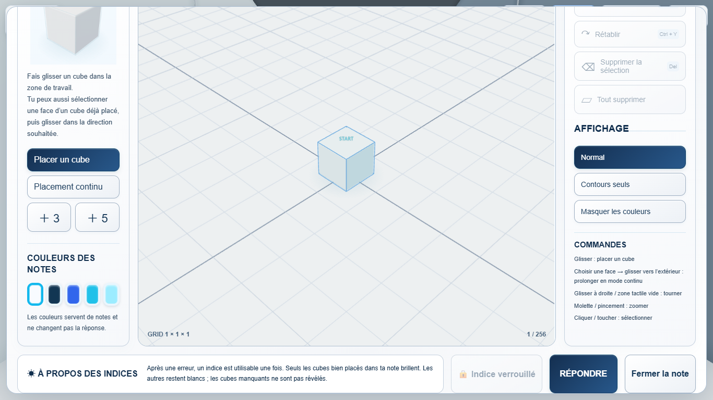
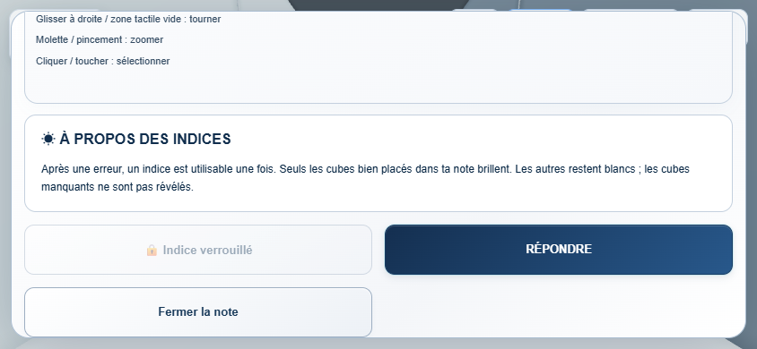

Answer from CUBE MEMO
READY FOR USER QA · 2026-09-12
ゲームを開く
変更内容
Full Memoに「回答する」を追加。STARTのみでも既存10択へ進めます。Memo形状を直接採点する機能ではありません。Answer Pointと共通の入口を使用し、2回答・Hint・Correct演出・Resultを維持します。
未確定Ghostはキャンセル。確定済みMemoを保存し、探索を挟まず回答画面へ移行。位置・カメラ・Undo履歴を維持します。
検証結果
- 自動テスト338/338 PASS（追加10件）、Production Build PASS。
- Standard numeric ID 1・16・31、ROUTE 1-1・1-5・1-10：Memo → 10択 → 正解 → Result PASS。
- Memo → Incorrect → Answer Point → Correct、および逆順：共有Attempts 1 → 2、Hint解放 PASS。
- ドラッグ中にEnterで回答：Ghost破棄、未配置Cube不追加 PASS。
- Memoタイマー停止、Quizタイマー再開、Retry・Reload保持 PASS。
- 9言語のボタンとHow To PlayをReloadなしで更新 PASS。
- 1920×1080、1366×768、390×844、844×390：Footerボタン重なりなし、44px以上、回答操作 PASS。
Edgeの実レンダリングをPlaywrightで検証。独立したブラウザ保存領域を使用。Stage開始とAnswer Point移動にはテスト用fixtureを使用し、回答・Memo操作はUIを使用。スマートフォン物理実機は未確認。全41Stageの手動クリアを行ったという意味ではありません。
主要QA記録 · 保存・Ghost・翻訳QA記録
Laptop — Footer（フランス語）

Mobile Landscape — スクロール後のFooter
